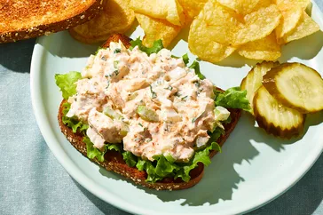

Tuna Fish Salad

Description
This tuna fish is excellent served on top of a green salad or between two pieces of bread with fresh lettuce. Sprinkle a little paprika on top to add a little flavor and color.
Ingredients
- 1 can tuna, drained
- 1/2 cup mayonnaise
- 1/4 cup chopped celery
- 1/4 cup chopped onion
- 1 tablespoon chopped fresh parsley
- 1/2 teaspoon lemon juice
- 1/4 teaspoon garlic powder
- 1/8 teaspoon salt
- 1/8 teaspoon ground black pepper
- 1 pinch paprika, or to taste